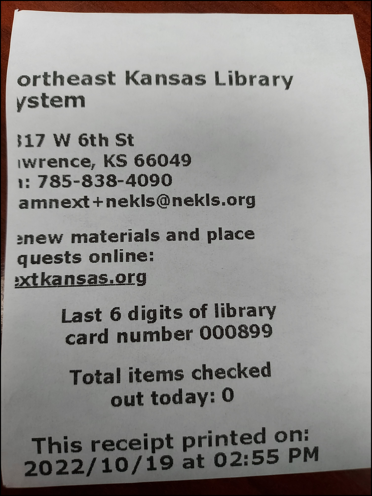
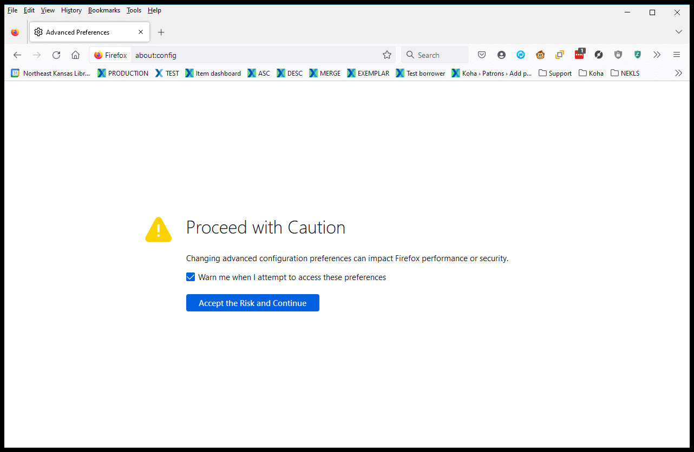
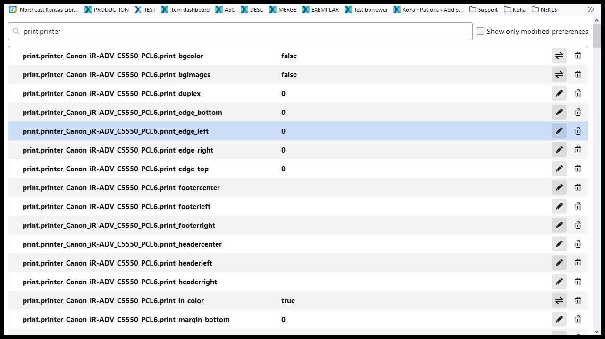
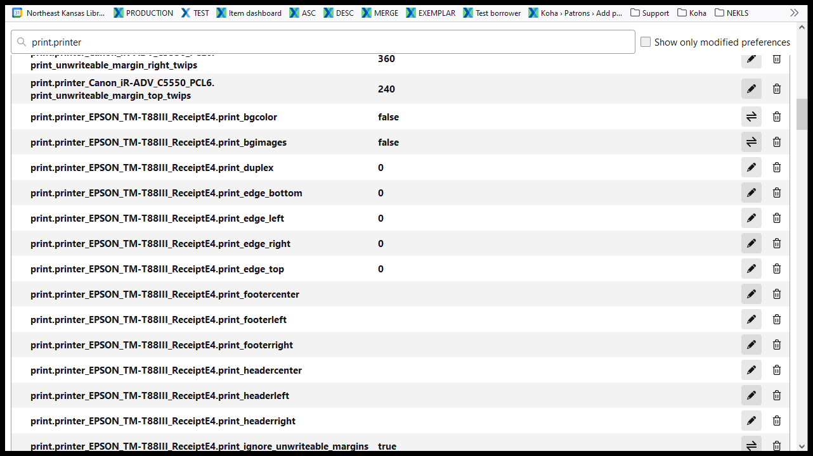
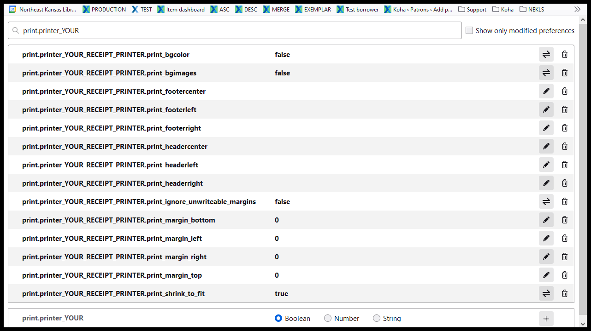

Firefox 106 printer margin problem
There is a change in the way some of the newer versions of Firefox are handling printing and it’s creating situations where the left margin of a receipt is not printing properly. Additionally, the header and the footer may print unintended blank spaces at the top and bottom of the page.

In order to fix these problems, you can do the following:
- Open a new window in Firefox and type “about:config” and click on the button that says “Accept the Risk and Continue”

- Type “print.printer” in the search bar

- Scroll through the results looking for the name of your receipt printer after “print.printer” - in my case my receipt printer is named “EPSON_TM-T88III_ReceiptE4”

- Set all of the following settings for your printer to:
- print.printer_YOUR_RECEIPT_PRINTER.print_bgcolor = false
- print.printer_YOUR_RECEIPT_PRINTER.print_bgimages = false
- print.printer_YOUR_RECEIPT_PRINTER.print_footercenter = (blank)
- print.printer_YOUR_RECEIPT_PRINTER.print_footerleft = (blank)
- print.printer_YOUR_RECEIPT_PRINTER.print_footerright = (blank)
- print.printer_YOUR_RECEIPT_PRINTER.print_headercenter = (blank)
- print.printer_YOUR_RECEIPT_PRINTER.print_headerleft = (blank)
- print.printer_YOUR_RECEIPT_PRINTER.print_headerright = (blank)
- print.printer_YOUR_RECEIPT_PRINTER.print_ignore_unwriteable_margins = false
- print.printer_YOUR_RECEIPT_PRINTER.print_margin_bottom = 0
- print.printer_YOUR_RECEIPT_PRINTER.print_margin_left = 0
- print.printer_YOUR_RECEIPT_PRINTER.print_margin_right = 0
- print.printer_YOUR_RECEIPT_PRINTER.print_margin_top = 0
- print.printer_YOUR_RECEIPT_PRINTER.print_shrink_to_fit = true
There may be other “print.printer_YOUR_RECEIPT_PRINTER” settings, but, in general, they can be ignored so long as these are set correctly.

If this does not solve your problem or if you have other printing issues please let us know at